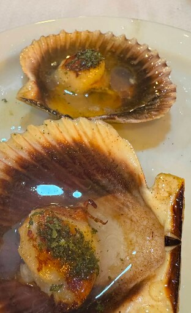
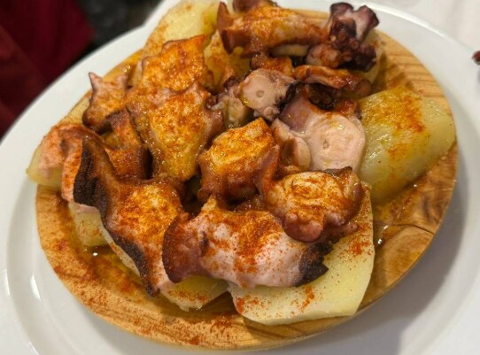

Avenida de Madrid, 20 — Toledo
Del Atlántico
a la mesa toledana.
Ostras, zamburiñas, nécoras y pulpo á feira. Producto que llega de las rías, se cuece al punto y se sirve sin artificio.
01 — La casa
Una barra gallega
a 500 km del mar.
En El Gallego el marisco manda. Lo que entra por la puerta cada mañana decide la pizarra del día: si la nécora viene buena, hay nécora; si no, no. Cocción justa, sal gorda, aceite y pimentón. Lo demás sobra.
Mesas para la mariscada larga del domingo y barra para la ración rápida con un albariño frío. Mediodía y noche, de martes a domingo.
- Servicio
- Mediodía y noche
- Abierto
- Martes a domingo
- Descanso
- Lunes


02 — La carta
Lo que trae la marea.
Selección orientativa. El marisco se sirve a precio de mercado (S/M) y cambia según temporada y lonja.
- Mariscada El GallegoPara dos. Nécora, cigala, gamba, langostino, mejillón y zamburiñaS/M
- Ostras gallegasAl natural, con limónS/M
- Zamburiñas a la planchaAjo, perejil y un hilo de aceiteS/M
- Nécoras cocidasCocción con sal de marS/M
- PercebesSegún disponibilidadS/M
- Gamba blanca de HuelvaCocida o a la planchaS/M
- Pulpo á feiraCachelos, pimentón de la Vera y sal gordaRación
- Navajas a la planchaLimón y aceite de olivaRación
- Almejas a la marineraSalsa para mojar panRación
- Pimientos de PadrónUnos pican, otros noRación
- Mejillones al vaporDe batea gallegaRación
- Calamares a la romanaRebozado fino, limónRación
- Lubina a la espaldaRefrito de ajo y guindillaS/M
- Merluza a la gallegaPatata cocida, ajada y pimentónS/M
- Rodaballo a la planchaPieza entera para compartirS/M
- Dorada a la salCostra de sal, jugosa por dentroS/M
03 — Galería
El local, la cocina
y lo que no se ve.




04 — Visítanos
Te guardamos
la mejor mesa.
Horario
Martes a domingo · 13:00 – 17:00
Noches: mar–mié hasta 23:30 · jue–dom hasta 00:00
Lunes cerrado